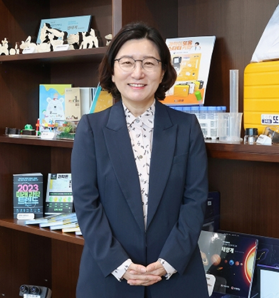

Home > 과학관소개 > 인사말
인사말
arrow_cool_down

과학이 문화가 되는 곳,
새로운 시작의 호기심을 얻어가는 곳,
국립과천과학관으로 여러분을 초대합니다.
한 때 과학은 어렵고, 똑똑한 사람들만 하는 것이라 생각하던 시절이 있었습니다.
국립과천과학관은 이런 과학과 대중의 거리를 좁히기 위해 노력해왔고,
그 결과 과학은 정답이 아니라 과정이며,
과학관은 지난 과학의 이야기를 보고 배우는 공간으로 자리매김 하였습니다.
앞으로는 AI, 감염병, 기후변화 등 다가올 사회 다방면의 '대전환 시대'를 맞이하여
시민들과 함께 질문과 답을 찾아가는 과학문화 공간이 되고자 합니다.
과천과학관이사회의 여러 문제들을 확인하고 답을 찾는 따뜻하고, 안전하고,
신나는 공간이 되었으면 합니다.
감사합니다.
국립과천과학관장 한형주